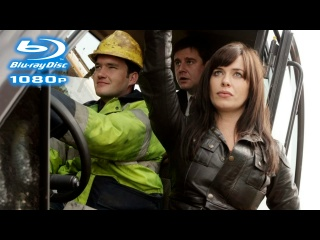
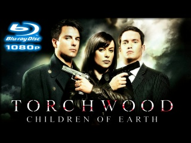
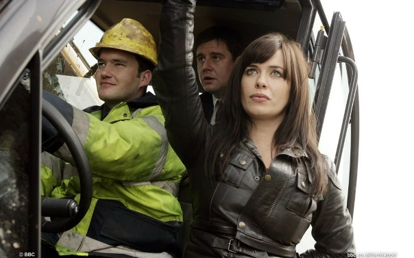
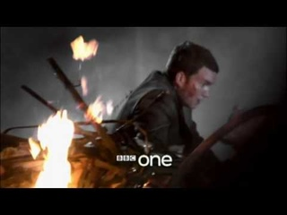

 |  Весь 3-й сезон (5 серий) |
Day Two
Дата выхода: 7 июля 2009
Формат: 60-минутный эпизод
| Варианты озвучек: | * Разные: смотрите по инструкции |
|---|---|
| Скачивание и просмотр: |
Торчвуд Три был взорван бомбой, заложенной в Джека Харкнесса. Гвен, Рис и Йанто находятся в бегах. Смогут ли они ускользнуть от правительства и спасти планету от 456?

